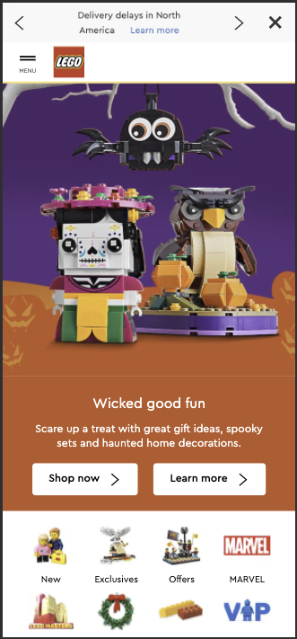

Design Principles
Visual Hierarchy
Lego
Lego puts their newest holiday set front and center so that it is the first thing the user sees. Next they have two action buttons that take you to the place to purchase or learn more and then to purchase. The title and description are the next steps on hierarchy.
Rule of Thirds
IFA
IFA uses the Rule of Thirds with their product picture. This helps to draw the users eye to the product itself and then to the pitch of what that product can do. Using this tecnique also makes more appealing to the eye.
White Space
Williams Sonoma
The Williams Sonoma home page has a good use of white space. It is very easy on the eyes. Easy to see everything displayed clearly. This makes it easy for the user to understand what they are looking at and how to get to what they are looking for.